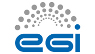

Welcome to the Life-Science Grid Community
The Life-Science Grid Community (LSGC) is a virtual research community to support life-science applications on the European Grid Infrastructure (EGI). LSGC represents some 500 users from 6 Virtual Organizations.
- July 2015: Virtual Imaging Platform (VIP) mentioned in iSGTW.
- July 2015: With 81 million CPU hours consumed during the
last year, biomed is the most active non-physics VO in
EGI, according
to EGI's
accounting.
Pie Chart showing the share in Normalised CPU time (kSI2K) per VO (June 2014-June 2015).

- April 2015: Virtual Imaging Platform (VIP) inspires EGI. Also see a typical use-case on multiple sclerosis..
- April 2014: VAPOR is now released in production and supports 8 VOs.
- December 2013: VAPOR beta version released.
- December 2013: MosGrid VO joins LSGC.
- November 2013: according to EGI's accounting statistics,
LSGC VOs have been the most active ones in Life-Sciences
in terms of number of executed jobs and consumed CPU
during the last year. This graph shows the per-VO
distribution of the normalized CPU time consumed by
Life-Science VOs in EGI from December 2012 to November
2013 (total: 230,367,332 normalized CPU hours):

- May 2013: Johan Montagnat is elected as LSGC coordinator for the next year.
- April 2013: DECIDE joins LSGC.
- Life-Sciences
- Medical imaging
- neuroimaging
- cardiovascular imaging
- radiotherapy simulation
- Bioinformatics
- genomics
- proteomics
- biobanking
- transcriptomics
- Medical imaging
- High-level services for life scientists
- grid application porting, execution and monitoring
- grid workflow management
- biomedical data management and sharing
- user interfaces: scientific gateways, browsers
- VO administration and operations, services operating and development
 The European Grid Initiative is a central and critical body to help liaising with NGIs. It provides us with sustained user support and brings our technical requirements to the technology providers (see Memorandum of Understanding).
The following National Grid Initiatives (NGIs) actively follow and/or contribute to LSGC activities:
- SURFsara (Dutch NGI)
- France Grilles (French NGI)
- Italian Grid Infrastructure
- Ibergrid (Spanish/Portuguese NGI)
NGIs of the following countries contribute compute and storage resources + admin teams to LSGC users: Asia Pacific, Bulgaria, Canada, Croatia, Cyprus, Germany, GISELA project, France, Greece, Hungary, Ireland, Italy, Latin America, Netherlands, Poland, Portugal, Russia, Slovakia, Spain, Turkey, UK.
Contact us if you think your NGI should or shouldn't appear in this list.
- Scalalife.

- Swiss NGI